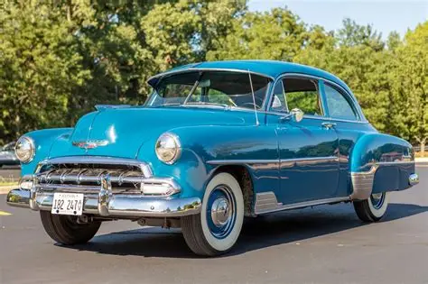
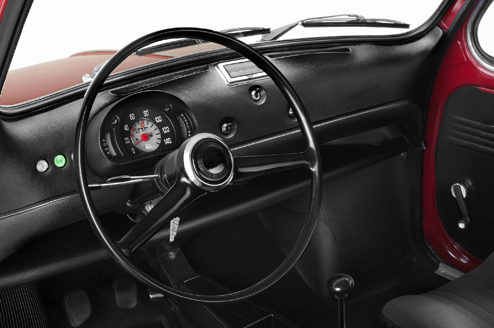
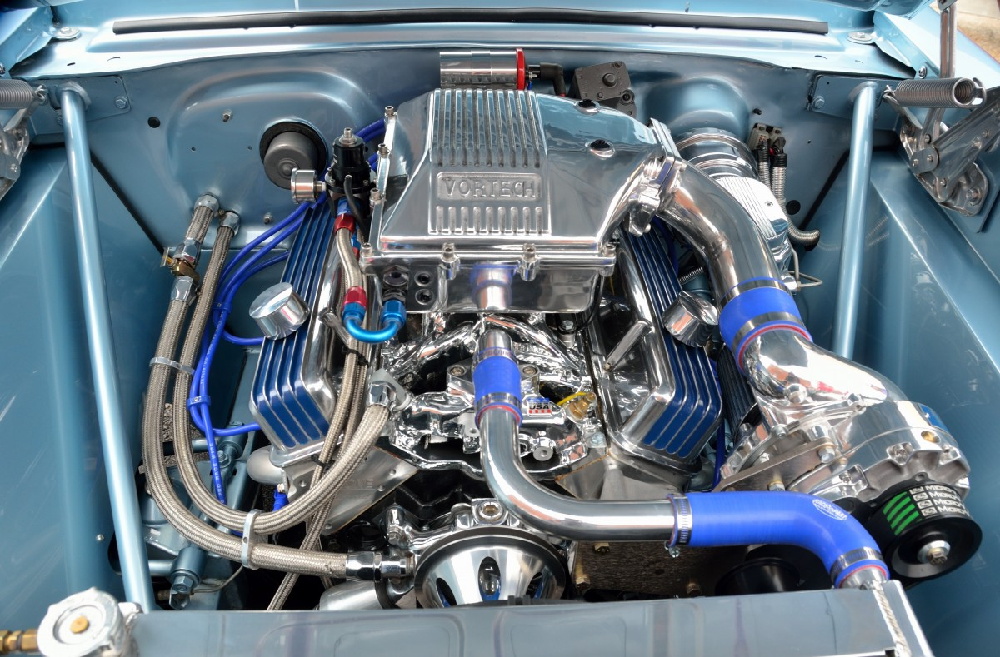

Restauración de vehículos clásicos.
Especializados en coches de principios y mediados del siglo XX
En Clásicos Ringer tenemos gran pasión por los vehículos antiguos. En nuestro taller estamos especializados en el mantenimiento, reparación y restauración de coches clásicos, auténticas joyas de la carretera a las que devolvemos todo su esplendor. Ofrecemos un servicio integral de restauración y mantenimiento de coches clásicos. Reparando y montando motores, cajas de cambio, frenos, etc. Nuestro objetivo es que queden como el primer día, tanto estética como funcionalmente. Llámanos, solicita presupuesto sin compromiso y prepárate para disfrutar de tu vehículo clásico durante muchos años.

⚙️ Chapa y pintura
Decapamos, lacamos, arreglamos arañazos, sustituimos piezas... Todo, con el objetivo de que los coches clásicos recuperen su aspecto original.
⚙️ Interiores
Para que el trabajo de restauración sea completo, renovamos la tapicería de los asientos, el volante, los guarnecidos o las moquetas. Cada detalle cuenta.
⚙️ Mecánica y electricidad
También nos preocupamos del funcionamiento del vehículo. Hacemos reparaciones integrales en el motor, los frenos, la suspensión o la caja de cambios.
